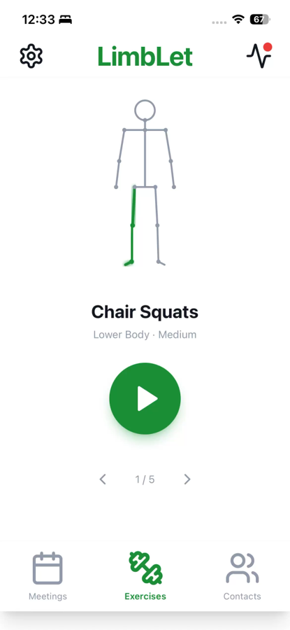
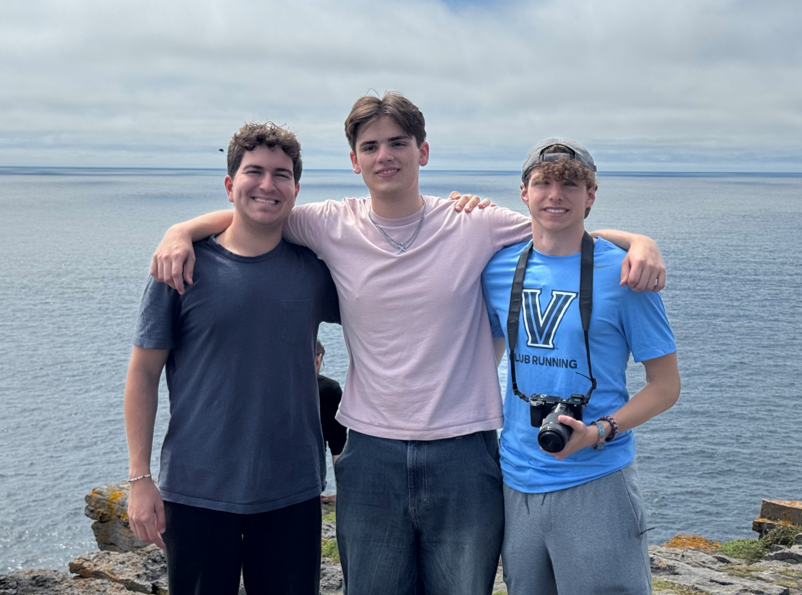

Entrepreneurship
Concept projectLimbLet
Wearable sensor venture concept
Overview
LimbLet is a wearable movement-tracking concept developed with an interdisciplinary team of three through Villanova’s Engineering Entrepreneurship Summer Institute (E2SI) in Ireland. We combined our interest in medical devices and helping people with my interest in sensor technology to explore how everyday movement data could support older adults and their care teams.
Identifying the need
Our team focused on the aging U.S. population as a long-term market opportunity. We wanted to address changes in mobility that could go unnoticed between medical appointments and explore ways to support independent living amid the high cost of residential care.
The concept centered on tracking movement over time during everyday activities, such as standing up, climbing stairs, and walking. Rather than relying only on occasional check-ins, we envisioned giving a care professional a longer-term view of changes in an individual’s movement patterns.
My contribution
I focused on marketing and communicating the product concept, including work on the app prototype and logo. I also researched existing wearable and motion-tracking products, using examples such as the Apple Watch and golf-assisting tools to explore how sensor technology delivers useful feedback to customers.
My research helped inform the team’s exploration of sensor options and potential applications. Working on the app and branding helped translate the technical idea into an experience that users, families, and potential customers could understand. Together, we progressed the concept into a venture pitch.
From two tracking points to three
Our initial concept used two tracking points. During our research, we identified a limitation with configurations such as one band on each wrist: without a reference near the midsection, interpreting the body’s overall movement would be more difficult.
We revised the concept to three tracking points. One sensor would always be worn around the waist to provide a midsection reference. The other two would be placed on the left and right upper limbs or the left and right lower limbs, depending on the movement being monitored. Based on our project research, we selected this as a promising balance between a small number of wearables and more useful body-motion information. The accuracy and sufficiency of that configuration would still need to be established through hardware testing and validation.
App prototype & proposed care workflow
We created an app prototype using Base44 AI to demonstrate how users could receive exercise recommendations and feedback. The prototype included accessibility options intended to make navigation easier for older adults, a family-view tab for tracked information, and visual exercise demonstrations.
In the proposed service, a care professional would review movement trends, recommend exercises based on their assessment, and be available for check-ins and questions. The app prototype illustrated this experience; it did not demonstrate a working sensor-to-clinician system.
Results & next steps
We brought the wearable concept and app prototype together into a venture pitch. Alongside the user experience and tracking approach, we explored recyclable materials and circular-economy principles as part of the product concept.
The next engineering steps would be to build and test the three-point sensing system, compare its movement estimates with a reference measurement method, and evaluate comfort and usability with intended users. Clinical usefulness would require further evaluation.
LimbLet gave me experience connecting sensor placement, accessibility, and a business concept around a shared user need. It also highlighted the importance of distinguishing a promising design hypothesis from demonstrated performance.
Project gallery




